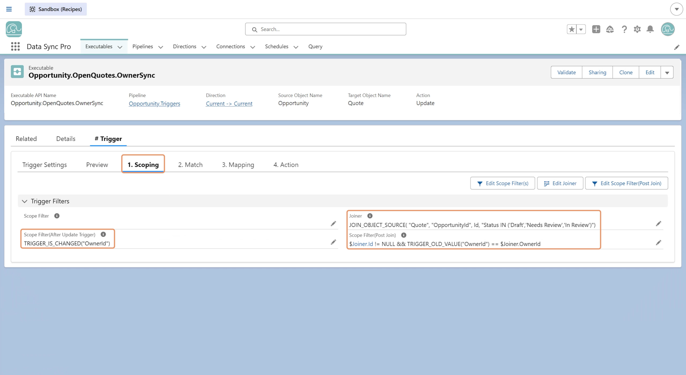

Joiners are configured in the Scoping section to combine source records with an additional dataset for advanced processing. You can use one of the following functions:
JOIN_OBJECT_CONNECTION - Combines source data with another Salesforce object
or Custom Setting from a configured Connection.JOIN_JSON - Combines source data with a JSON array represented as a string.
How It Works
A Joiner operates as one of the following:
Referencing Joined Fields
After joining, fields from the additional dataset can be referenced using:
$Joiner.FieldName
These joined fields can be used in:
Joiners allow you to augment source records with additional data sets, enabling more advanced transformations.
